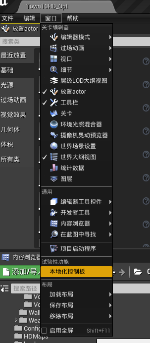
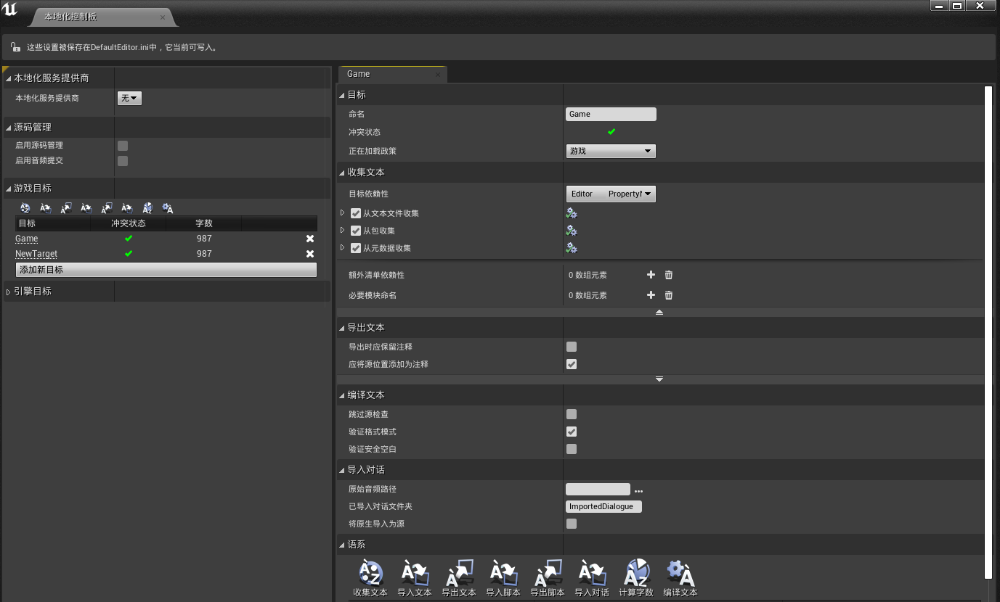
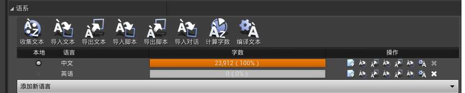
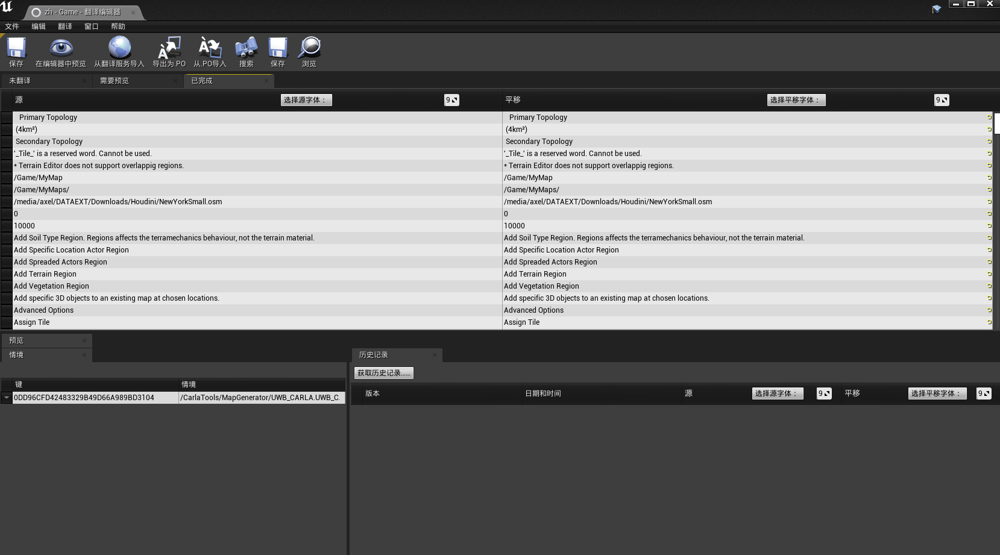
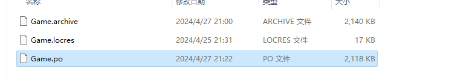
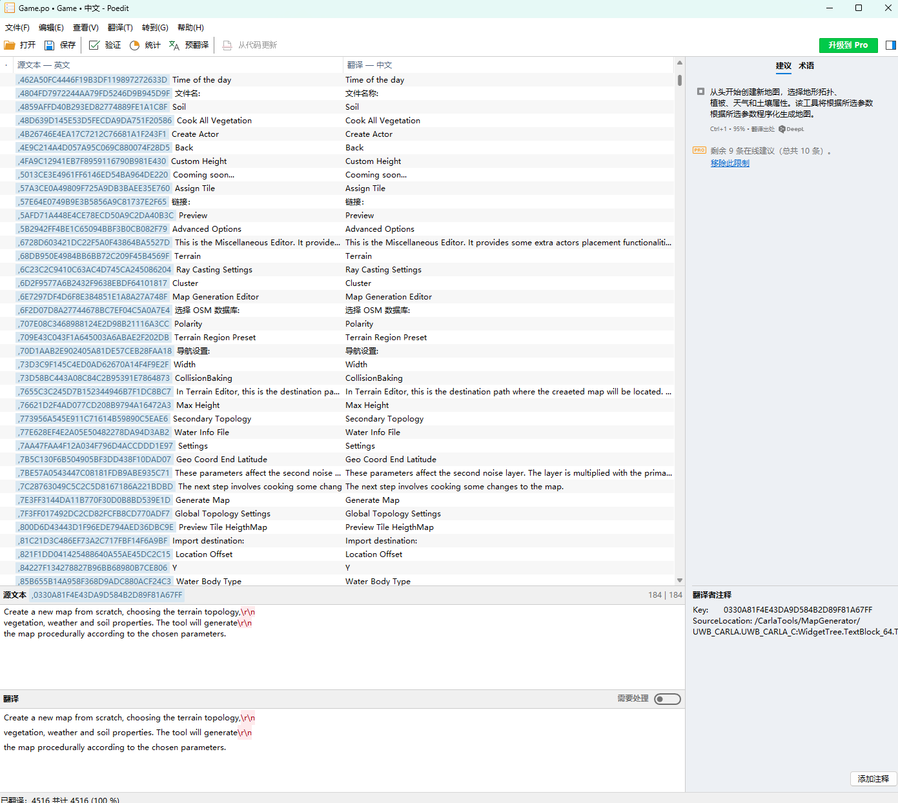

UE编辑器本地化
前言
在本文中，我们将探讨如何使用UE4的本地化工具来优化你的游戏项目，涵盖从基本设置到高级功能的各个方面。无论是初次尝试游戏开发还是寻求提高现有项目的全球可及性，本指南都将提供必要的信息和步骤，帮助你顺利实现游戏本地化。
1.工具说明
导航至 窗口/本地化控制面板

主界面部分详解

-
本地化游戏目标，默认会创建一个，如果要创建新的本地化目标，请确保为其指定适当的极爱在策略，通常为 游戏 或者 固定。默认是 永不 ，是永不加载的。
-
目标依赖性如图所示：

-
选择收集方式：
-
从文本收集：文本文件，比如我们的代码；
- 从包收集：对蓝图等uassest资源的本地化；
- 从元数据收集：对元数据Metadata的本地化，包括翻译变量名，分类，工具提示。
其中，对于元数据的收集，必须包含至少一个路径通配符和一个键规格。路径和上面一样添加Source文件就好，键规格可以照抄引擎目标中的示例，以Property Name为例：
元数据键 填 DisplayName
文本命名空间 填 UObjectDisplayNames
文本键图案 填 {FieldPath}
2.翻译文本流程
上述配置完以后，主要操作都在 语系 中。

-
如上图所示，先添加你需要翻译的语言地区和你本地文本默认的语言地区。
-
然后点击收集文本，收集本地需要翻译的文本，成功后

开始翻译文本
这里有两种方式，一种是直接在UE工具中翻译，一种是导出使用第三方工具翻译。
UE工具翻译：点击每个文化语言后面


在翻译中写入翻译后的文本即可，然后点击保存。
自行导出翻译
如下图所示：


上述第一种导出方式是导出全部语系，第二种是导出指定语系的文本，选择路径导出后会生成.po格式文件，是包含要翻译的每种文化文本以及当前翻译的文件，是一种通用格式，可直接手动编辑。


但是不建议这么做，这里我们使用 Poedit 翻译工具去进行编辑，里面功能齐全，包括自动翻译，翻译提示，多人协同等。

编辑完保存后，直接导入即可，按照导出的方式，再导入。


统计翻译文本，编译翻译文本。


最后，需要重新打开Carla。